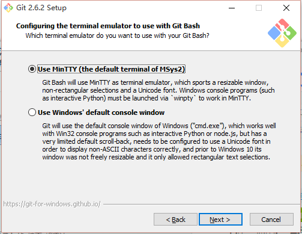
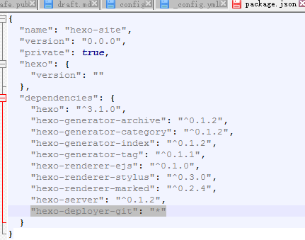
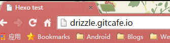

Hexo is a Node.js-based static blog framework. It’s fast, easy to write with, and highly extensible.
Notes
Don’t use punctuation from Chinese IMEs. Enable file extension display.
References
Environment Setup
Install Git
First, open the Git installer.

Select components based on your needs.

Choose the command-line style.

Choose line endings; see CRLF vs LF.

Use MinTTY as the terminal.

Enable the system cache to fix slow performance issues.
Configure NodeJS Environment Variables
Please use the 4.x.x version; 5.x.x will error out.
Run npm -v in CMD. If it shows as below, the environment variables are configured correctly; otherwise, you need to reconfigure them.
Download and install NodeJS, then find the NodeJS install directory.

Mine is C:Program Filesnodejs.
Right-click “This PC” → Properties → Advanced system settings → Environment Variables.
Find the system variable Path, click Edit, and check whether the NodeJS path is present.
If not, add ;C:Program Filesnodejs.

Register a GitCafe Account
Enter an English username you like in username.

After registering, you’ll see the user dashboard. Click to configure the SSH Public Key.

Follow step 1 to configure the SSH public key. Right-click on the desktop and choose “Git Bash Here”, then run the following command (the string at the end is your registration email):
ssh-keygen -t rsa -C "root@gorgiaxx.com" -f ~/.ssh/gitcafe
It will prompt you to enter a passphrase. After entering it twice, the SSH key pair is generated.

Next, go to the .ssh folder under your user directory: C:UsersPC013evil.ssh (PC013evil is my Windows username).
Create a new text file with no extension named config and put the following in it:
Host gitcafe.com www.gitcafe.com
IdentityFile ~/.ssh/gitcafe

Switch to GitCafe’s page: https://gitcafe.com/account/public_keys/new

The title can be anything. For Key, paste the content of gitcafe.pub. For password, enter the passphrase you used when generating the SSH key.
Then test it in the terminal; it will prompt for your passphrase:
ssh -vT git@gitcafe.com
Then go back to the user dashboard and click “Create a new project”: https://gitcafe.com/projects/new
Set Project name the same as your username and create it.

Next, choose SSH on the right and copy the URL git@gitcafe.com:Drizzle/Drizzle.git.

Install and Configure Hexo
Run in CMD as Administrator:
npm install -g hexo-cli
-g means global install, so you can run hexo from any path. cli stands for command-line interface.
Tips: If installation is slow, you can use the Taobao mirror:
npm install -g cnpm --registry=https://registry.npm.taobao.org
Then add c before npm each time:
cnpm install -g hexo-cli
Create a new folder, right-click inside it and choose “Git Bash Here” to open an MINGW terminal.
 Initialize Hexo in this folder:
Initialize Hexo in this folder:
hexo init
 After initializing Hexo, it prompts you to run:
After initializing Hexo, it prompts you to run:
npm install
You can now see that some files have been generated.

.
├── _config.yml hexo config file
├── package.json dependency list
├── node_modules nodejs modules directory
├── scaffolds template directory
├── scripts feature enhancement scripts
├── source blog content files
| ├── _drafts drafts
| └── _posts posts
└── themes themes
Now open _config.yml in an editor. Find the deploy section at the bottom. Don’t forget there must be a space after every colon.
How to fill these is explained on the official site: deployment type is git, and repo is the remote repository URL you copied earlier.
deploy:
type: git
repo: git@gitcafe.com:Drizzle/Drizzle.git
To deploy Hexo via Git, you need to install a plugin. Here are two ways.
Method 1: install it directly. Adding --save writes it into package.json while installing:
npm install hexo-deployer-git --save
Method 2: add the plugin dependency hexo-deployer-git into Package.json.

Then run:
npm install
Here we use method 1. After installation completes:
 Next, preview the blog. Run:
Next, preview the blog. Run:
hexo server -i 127.0.0.1 -p 80
Open http://127.0.0.1 in the browser and it should work.

It’s annoying to add parameters every time. You can modify the config under the NodeJS module directory:
./node_modules/hexo-server/index.js
Change it to:
hexo.config.server = assign({
port: 80,
log: false,
ip: '127.0.0.1'
}, hexo.config.server);
Then you no longer need extra parameters for preview. Hexo commands can also be shortened: server can be s.
hexo s

After the test succeeds, generate static files. The output will be under ./public, ready to deploy.
hexo generate
Or:
hexo g
After generating, deploy:
hexo deploy
Or:
hexo d
If you see this prompt, it’s an SSH config issue on the remote server side. Ignore it, type yes, then enter your passphrase.

Deployment succeeds:

Now open http://drizzle.gitcafe.io/.

Writing Posts
Run hexo n "title" to create an empty post with the title as the post title.
$ hexo n "title"
INFO Created: C:wwwMyBlogsource_poststitle.md
You can see a title.md file is generated. Blog content is written in Markdown. You can use Sublime plugins, online editors, or dedicated editors.
Basic Usage of Git Tools
Sometimes, due to Git tool version issues, deploy may fail. In that case you need to deploy manually.
The ./.deploy_git folder is the Git working directory. For Git basics, you can learn from Liao Xuefeng’s blog: git tutorial.
Right-click in this folder and choose “Git Bash Here”.
First, add the remote repository:
git remote add origin git@gitcafe.com:Drizzle/Drizzle.git
Fetch all files from the remote to resolve some conflict issues:
git fetch --all
Output shows the branches have been updated:
$ git fetch --all
Fetching origin
Enter passphrase for key '/c/Users/PC013evil/.ssh/gitcafe':
From gitcafe.com:Drizzle/Drizzle
* [new branch] gitcafe-pages -> origin/gitcafe-pages
Switch to the gitcafe-pages branch:
git branch gitcafe-pages
Do not merge anything; point HEAD to the version just synced from the remote:
git reset --hard origin/gitcafe-pages
Output:
$ git reset --hard origin/gitcafe-pages
HEAD is now at d202356 Site updated: 2015-11-01 14:22:41
For example, if I want to change the title in index.html:
 Save it, then run
Save it, then run git add ./:
$ git add ./
warning: LF will be replaced by CRLF in index.html.
The file will have its original line endings in your working directory.
Commit to the local repository. -m is the commit message:
$ git commit -m "test"
[master warning: LF will be replaced by CRLF in index.html.
The file will have its original line endings in your working directory.
bf2c13f] test
warning: LF will be replaced by CRLF in index.html.
The file will have its original line endings in your working directory.
1 file changed, 1 insertion(+), 1 deletion(-)
Finally, push to the remote repository:
$ git push -u origin gitcafe-pages
Enter passphrase for key '/c/Users/PC013evil/.ssh/gitcafe':
Counting objects: 3, done.
Delta compression using up to 4 threads.
Compressing objects: 100% (3/3), done.
Writing objects: 100% (3/3), 280 bytes | 0 bytes/s, done.
Total 3 (delta 2), reused 0 (delta 0)
To git@gitcafe.com:Drizzle/Drizzle.git
d202356..bf2c13f gitcafe-pages -> gitcafe-pages
Branch gitcafe-pages set up to track remote branch gitcafe-pages from origin.
Refresh the page:

The title has changed.
 CC BY-NC-SA 4.0
CC BY-NC-SA 4.0